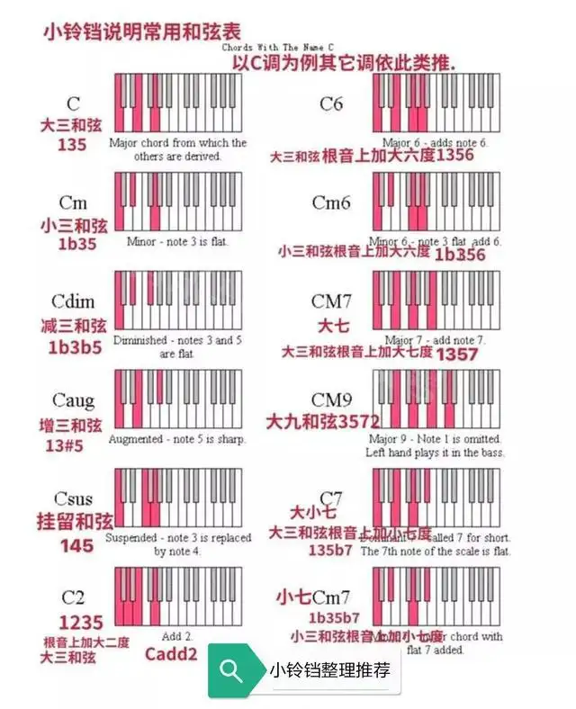

和弦是指有一定音程关系的一组声音，即将三个或以上的音，按照三度或非三度的叠置关系，在纵向上加以结合，就称为和弦。本部分分类介绍一些常见钢琴和弦。

首先需要了解：
根音与三音是大三度，三音与五音是小三度。用根音的大写英文字母音名来表示。如do，mi，sol和弦用C表示，fa，la，do和弦用F表示，降mi，sol，降si就用Eb（降E）表示，升fa，升la，升do用F#（升F）表示。
根音与三音是小三度，三音与五音是大三度。用根音的大写英文字母音名加上小写m表示。如re，fa，la和弦用Dm表示，mi，sol，si和弦用Em表示，降mi，降sol，降si用Ebm表示。
根音与三音，三音与五音都是大三度。用根音的大写英文字母音名加上aug或加一个“+”表示。如do，mi，升sol和弦表示为Caug或C+，fa，la，升do和弦表示为Faug或F+。
根音与三音，三音与五音都是小三度。用根音的大写英文字母音名加上dim或一个“-”表示。如re，fa，降la，表示为Ddim或D-，升do，mi，sol表示为#Cdim或#C-。
挂留和弦一般指用二度音或者纯四度音代替原来的三度音而排列组合成的和弦。比如C和弦，和弦音是do、mi、sol，那么fa相对于do来说是一个4级的音，所以如果在弹的时候弹了do、fa、so，那么这个和弦就叫C挂四和弦，记为Csus4。
在一个以三度关系为基础的和弦上加上其它音，如加入六度音，九度音，四度音等，标记法为将这个加音的度数写于某和弦的右边，如do，mi，sol，la和弦可标为C6，（la是基于C和弦的加音），fa，la，do，sol和弦可标为F9。
又称大大七和弦，是在大三和弦基础上再加大三度。用根音的大写英文字母音名加上Maj7表示。如do，mi，sol，si和弦表示为Cmaj7，降si，re，fa，la和弦表示为Bbmaj7。
在大三和弦基础上再加小三度。用根音的大写英文字母音名加上“7”即可。如sol，si，re，fa和弦用G7表示，la，升do，mi，sol用A7表示。
在小三和弦基础上再加大三度。用根音的大写英文字母音名加上mM7表示。如do，降mi，sol，si和弦表示为CmM7，la，do，mi，升sol表示为AmM7。
又称小小七和弦，是在小三和弦基础上再加小三度。用根音的大写英文字母音名加上“m7”表示。如la，do，mi，sol和弦表示为Am7，re，fa，la，do和弦表示为Dm7。